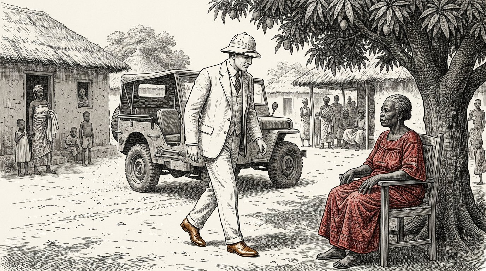
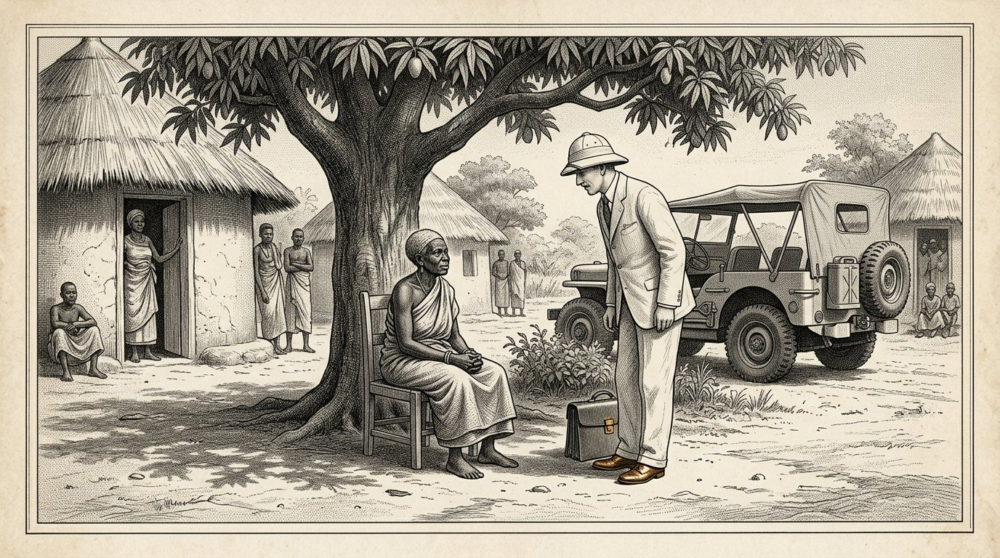

КНИГА ПЯТАЯ
Косарис
Книга партнёра

КНИГА ПЯТАЯ
Книга партнёра
Письмо, которое пошло вперед
Пролог — говорит Косус
Я Косус. Когда вы открываете эту пятую книгу, со дня моей смерти прошло тринадцать лет, и Петрос столько раз держал в руках блокнот, который дал ему Алкион, что кожаный переплет вокруг него размягчился. Это больше не моя книга. Это книга Петроса. Я говорю пролог только потому, что этого требует обычай и потому, что хочу сказать одну вещь, прежде чем вы начнете.
Четвертая книга была о жидкости. Пятая книга рассказывает об отношениях между двумя людьми, которые хотят вместе создать эту жидкость там, где она еще не была создана. Это другой вопрос. Любой, кто производит жидкость, нуждается в технологии. Весы Тимариса нужны любому, кто строит отношения. Первому можно научиться. Второе можно испортить.
Петрос покинул портовую деревню с сундуком, бутылкой и блокнотом. Перед отъездом он написал письмо. Письмо предшествовало отплытию корабля, который отплыл на три недели раньше него. В письме было имя Яра и адрес деревни, расположенной на экваторе, где несколько лет назад побывали Алкион и Демира. В письме говорилось: Я Петрос, ученик Косуса, преемник Алкиона. Я прихожу не забирать. Я пришел спросить, могу ли я поучиться у вас, и показать вам, чему я научился.
Письмо пришло на три недели раньше Петроса. Яра прочитала это. Она прочитала это дважды. Потом положила его в ящик и никому ничего не сказала. То, что находится в ящике, появится в этой книге, когда придет час.
Тот, кто прочитает эту книгу, не научится экспортировать жидкость. Любой, кто прочитает эту книгу, узнает, как вместе построить систему, чтобы ни одна из сторон не подумала, что в конце концов они проиграли. Это меньшая вещь, которой нужно научиться, чем кажется. И это нечто большее, чем кто-либо говорит.
Предоставляю слово Петросу. Отсюда это он.
Косус говорит:письмо, которое идёт впереди путешественника, — первая нить весов, подвешенных между двумя людьми. Тот, кто приезжает без письма, должен спешить. Тот, кто позволяет письму прийти раньше себя, прибывает в своё время.
Якобус ван Меркстейн
Это Книга пятая «Косарис». Она следует за Книгой четвёртой, где из травы получали жидкость, а деревня согревала себя зимой без газа. В конце Книги четвёртой Алкион передала тетрадь Косуса Петросу, а Антея завершила книгу обещанием, что первый ученик Петроса в свой черёд напишет Книгу шестую.
Поэтому в этой книге Петрос отправляется в путь. Он едет к экватору, где в молодости уже странствовал четыре года. Он прибывает в деревню, где живёт Яра — та самая женщина в красном платье, знакомая вам по десятой части Книги первой. Она уже не та, что прежде: стала старше, а кооператив, созданный ею и старейшинами, вырос в нечто, на что устремлены взгляды трёх соседних стран.
Эту книгу я написал после трех встреч с Петросом за последние годы и после прочтения писем, которые он написал Алкиону и Антее. Сами письма остались у Антеи. То, что вы читаете, — это мое краткое изложение того, что он мне рассказал и что эти письма помогли мне понять.
Я назову одну вещь по имени. Пятая книга не о помощи развитию и не об экспорте энергоносителей. Речь идет о том, каково приехать на Юг северянину, не привезя с собой предположения прошлого века. Это сложнее, чем кажется. Петрос это знает, и в книге показано, что происходит, когда он пытается. Он терпит неудачу в некоторых моментах. Яра помогает ему вернуться в нужное русло. В других случаях он учит ее чему-то, чего у нее еще не было. Именно на таких весах весит эта книга.
Любой, кто читает эту книгу и думает, что она об Африке, читает неправильно. Речь идет о том, как два человека с двух континентов учатся вместе строить что-то, что ни один из них не смог бы сделать в одиночку. Именно это означают четыре столпа.
Мальта, август 2027 г.
Часть 1

В которой Петрос прибывает к экватору; Яра встречает его, не протягивая руки, и первую неделю он вместо разговоров слушает.

Петрос сошёл с корабля на пристань, где в семь утра солнце уже стояло выше, чем стояло бы на Мальте в полночь. Рядом с ним был его ящик. Через плечо висела кожаная сумка. Бутылка гидролизата, завёрнутая в рубашки, лежала на дне сумки.
На пристани стоял мальчик, который знал его имя. Мальчик сказал: Ты Петрос. Я Барака. Меня послала Яра. Приходить.
Петрос сказал: У меня нет ни лошади, ни телеги. Барака сказал: это хорошо. Есть машина. Петрос спросил: у тебя есть машина? Барака сказал: в деревне есть машина. Сегодня мне предстоит отвезти его, потому что я заберу тебя.
Они спустились по пирсу к старой желтой «Тойоте», привязанной веревкой к тому месту, где отсутствовала дверь. Барака погрузил коробку в багажник. Он сказал: это тяжело? Петрос сказал: там пресс и книга. Пресс небольшой, но тяжелый. Барака сказал: тогда он тяжелый.
Они ехали час вглубь страны. Дорога была красной и ухабистой, и Петрос чувствовал, как с каждой неровностью ящик скользил за ним. Барака ехал медленно и не торопясь. Он сказал: ты голоден? Петрос сказал: пока нет. Барака сказал: это здорово, потому что мы не будем есть, пока не приедем.
Они прошли мимо манговых деревьев, стада коз и трех женщин с узлами на головах. Барака поприветствовал их, не останавливаясь. Петрос сказал: Здесь все друг друга приветствуют. Барака сказал, что это не все. Это Фату, Амината и Мариам. Они приходят сюда каждое утро. Если бы мимо проходил кто-то, кого я не знал, я бы с ним не поздоровался. Это другое.
Петрос сказал: Я думаю, мне еще многое предстоит узнать о том, кто есть кто здесь. Барака сказал: Это не сложно. Вам придется прислушаться к именам. Если у кого-то есть имя, вы знаете, что другие его знают. Когда мимо проходит человек без имени, ты знаешь, что он не отсюда. Вот и все.
Они прибыли в деревню с длинным рядом низких домов и большим манговым деревом посреди поляны. Женщина в красном платье сидела на стуле под манговым деревом. Она была старше, чем Петрос представлял Яру. Она встала, когда увидела машину. Она подошла к машине. Она не протянула руку.
Она сказала: Добро пожаловать, Петрос, ученик Косуса. Сначала сядь. Мы поговорим сегодня вечером. Сегодня ты слушаешь. Петрос кивнул. Он сказал: спасибо, Яра. Он сидел на скамейке под манговым деревом. Барака принес ему воды. И Петрос весь день слушал звуки деревни, не говоря ни слова.
Косус говорит:кто приедет в чужую землю и будет говорить в первый день, тот говорит о себе. Те, кто слушает в первый день, во второй день расскажут об остальных. Только те, кто говорит о других, будут поняты на третий день.

Яра вернулась в конце дня. Она сказала: пойдем со мной. Мы едим. Она подвела Петроса к длинному деревянному столу, установленному под крышей из сухих листьев. За столом уже сидело двенадцать человек: Барака, трое пожилых мужчин, четыре женщины возраста Яры и четверо детей в возрасте от семи до тринадцати лет.
Яра сказала: это Петрос. Он приезжает очень далеко. Он знает Алкиона и Демиру. Он был здесь десять лет назад, но вы, вероятно, его уже не знаете, потому что он за четыре года объездил все деревни побережья, нигде не задерживаясь больше месяца.
Самый старший из мужчин за столом сказал: «Ты не оставался на одном месте достаточно долго, чтобы о тебе знали где-нибудь». Это более распространено среди северян. Петрос сказал: Я знаю это, и на этот раз хочу сделать по-другому. Я хочу оставаться здесь столько, сколько потребуется, и не короче.
Яра сказала: сколько нужно? Петрос сказал: Я не знаю. Я узнаю это от тебя. Яра сказала: это хороший ответ. Помните, вы дали это. Когда через три месяца у тебя закончится терпение, я тебе напомню.
Они ели. Едой был рис с курицей и зеленым соусом, который Петрос не узнал. Он спросил, что это такое. Одна из женщин сказала: это Моринга. Петрос сказал: Я знаю его. Сжимаем его вместе с травой. Женщина сказала: ты на нее давишь? Петрос сказал: он уйдет вместе с Цзюньцао. Это делает жидкость прозрачной.
Женщина сказала: Мы съедим ее. Подсушиваем, измельчаем и кладем в соус. Мы не давим на нее. Петрос сказал: возможно, так будет лучше. Я никогда не думал, что можно есть морингу. Я всегда видел в ней ресурс.
Яра сказала: это первое, чему ты у нас научишься. То, что вы называете добавкой, для нас — урожай. То, что вы называете урожаем, для нас — лекарство. Когда вы сжимаете Морингу, вы что-то теряете. Когда ты ешь волосы, ты становишься сильнее. Если мы собираемся работать вместе, мы должны сначала договориться о том, что мы едим и что выжимаем. Иначе вы испортите нашу кухню и оскорбите нас, сами того не ведая.
Петрос кивнул. Он сказал: Я запишу это. Яра сказала: запиши позже. Теперь ешь. Они ели. Звезды поднялись над крышей из листьев. Петрос чувствовал, что он находится дальше от дома, чем когда-либо, и в то же время он чувствовал, что находится именно в нужном месте.
Косус говорит:любой, кто узнает помощь в чужой стране, где находится урожай, должен знать, что он не прибыл к поставщику. Он пришел на кухню. Не оскорбляй кухню, иначе ты больше никогда не будешь с нами есть.

На вторую ночь Яра привела Петроса к себе домой. Это был длинный невысокий дом с верандой. На веранде стоял письменный стол. На письменном столе был ящик. В ящике были бумаги.
Яра открыла ящик. Она достала письмо. Она сказала: «Вы написали это за три недели до вашего приезда. Я прочитал это дважды. Я положил его в этот ящик. Я никому не говорил, что получил это.
Петрос сказал, почему бы и нет? Яра сказала: потому что я хотела посмотреть, приедешь ли ты, как обещало письмо. В письме вы написали, что пришли не забирать. Вы написали, что пришли спросить. Я провел три недели, размышляя, как вы приедете. Сегодня я видел, как ты пришёл. Ты пришел не забирать. Вы пришли спросить. Теперь письмо можно вынуть из ящика.
Петрос сказал: а если бы я поступил иначе? Яра сказала: тогда письмо должно было остаться в ящике. А я тебе завтра сказал, что тебя ждут в деревне подальше, где живет мой зять. Он вежлив и гостеприимен и мог бы принять вас три недели, и вы бы ничему от нас не научились. Тогда бы вы вернулись с историями, а не со знаниями.
Петрос сказал: откуда ты знал, что я буду другим? Яра сказала: Я не знала. Я на это надеялся. Ваше письмо было написано иначе, чем письма, которые я получаю от других северян. Они всегда открываются тем, что приносят. Вы открыли то, о чем пришли спросить. Это был хороший знак. Но персонажи могут лгать. Поэтому письмо ждало три недели.
Петрос спросил: Что ты мне ответил? Яра сказала: ничего. Я не отвечаю на письма от незнакомых мне людей. Я отвечаю людям, которые приходят. Это другое. Бумага лежит легко. Люди тоже лгут, но я могу сказать когда, глядя на них.
Петрос кивнул. Он сказал: значит, письмо в ящике теперь начало. Яра сказала: нет, он далеко. Вам больше не придется записывать, что мы будем делать завтра. Мы говорим. Мы строим. И когда пойдешь домой, напиши Алкиону, что построено, а не то, что было сказано. Вот так.
Петрос развернул письмо. Он увидел свой почерк, написанный три месяца назад. Он почувствовал что-то странное: письмо было уже не его. Оно принадлежало Яре. Она носила эти слова в течение трех недель без его ведома. Теперь она вернула их не как ответ, а как ключ.
Косус говорит:письмо, которое вы отправили вперед, перестанет быть вашим, как только оно придет. Его несет тот, кто его читает, и возвращает в тот час, который выбирает читатель. Это знает каждый, кто пишет. Тот, кто пишет, не зная этого, пишет только для себя.
Часть II
Часть 2

В которой Петрос узнаёт, что трава растёт здесь уже пятнадцать лет, старейшины знают о ней больше него, а привезённый им пресс ставит вопрос о том, чего прежде не было.

На третье утро Яра повела Петроса в поле за деревней. Насколько хватало глаз, это был Цзюнькао размером с человека. Между каждым рядом Хункао деревья Моринга располагались на расстоянии примерно трех метров друг от друга.
Петрос остановился на краю поля. Он сказал: как давно это здесь? Яра сказала: этому произведению пятнадцать лет. Та часть, что на другом берегу реки, была двенадцатилетней. Участку возле соседнего села девять лет. У нас в районе около шестисот акров земли.
Петрос сказал: кто тебя этому научил? Яра сказала: Моя мама научила меня сажать. Он достался ей от инженера из Китая, который приехал сюда работать в 1980-х годах и подарил ей Цзюньцао. Тогда ей было восемнадцать, а мне три. Я добавил Морингу десять лет спустя, после разговора со старым фермером, который сказал мне, что Моринга защищает корни.
Петрос сказал: значит не мы это придумали. Яра сказала: нет. Твой Алкион это не изобрел. Ваш Косус не изобрел это. Я это не придумал. Никто этого не придумал. Трава была здесь еще до того, как мы поняли, что с ней можно сделать.
Петрос сказал: а прессинг? Яра сказала: мы так не делаем. Мы косим траву и кормим ею наших животных. Мы сушим листья и сжигаем их в печах. Мы едим Морингу. Из корней Цзюньцао делаем лекарство от лихорадки. Мы не давим, потому что никогда не видели настолько маленького пресса, который мог бы разместиться здесь, под манговым деревом, без фабрики вокруг него.
Петрос сказал: один у меня есть. В ящике. Яра сказала: я знаю. Барака почувствовал его вес. Он сказал мне, что внутри есть нечто тяжёлое — не книга и не бутылка. Я догадалась. Я хочу увидеть пресс сегодня после полудня.
Петрос сказал: а если это сработает? Что это значит для вас? Яра сказала: Я не знаю. Я хочу сначала посмотреть. Если получится, поговорим потом. Если бы это не сработало, нам не пришлось бы разговаривать. Разговоры требуют времени, а обещания требуют еще больше времени. Мы делаем это наоборот.
Петрос задумался. Он сказал: Это противоположно тому, как я учился этому дома. Яра сказала: Я знаю. Вы сначала подпишете договор, а потом проверите, работает ли он. Сначала смотрим, а потом соглашаемся. И то, и другое возможно. Мы делаем это по-своему, потому что мы живем здесь, а вы приезжаете.
Косус говорит:кто приезжает с прессой и думает, что что-то приносит, тот должен сначала узнать, что посевы уже растут и народ уже ест. Пресса добавляет то, чего не было. Оно не заменяет того, что было. Тот, кто это путает, потеряет народ еще до того, как создаст прессу.

В тот же день они установили пресс под манговым деревом. Барака вытащил детали из коробки. Старший, а также три женщины и семеро детей стояли полукругом вокруг него.
Петрос показал, как резать. Барака принес с поля пучок Джункао и горсть листьев моринги. Петрос показал, как накладывать слои: трава, лист, трава, лист. Он повернул винт. Все смотрели.
Ничего не пришло. Петрос повернулся быстрее. Еще ничего не пришло. Он крутился так сильно, как только мог. Пришла капля. Потом два. Тогда ничего больше.
Петрос покраснел. Он подумал: я проделывал это двадцать раз на Мальте и шесть раз в портовой деревне. Почему здесь это не работает?
Яра ничего не сказала. Она посмотрела на поле, а затем на прессу. Она спросила: Сколько лет было траве, которую ты давил дома? Петрос сказал: через три месяца после последнего сокращения. Яра сказала: и это? Она указала на пачку на прессе. Петрос сказал: Я не знаю. Барака?
Барака сказал: Этой траве девять месяцев. Мы не косили это поле с января, потому что оставляли его расти на семена. Мы не будем косить до следующей недели.
Яра сказала: тогда ваш пресс для более молодой травы, чем та, что была здесь сегодня. Когда мы будем косить на следующей неделе, мы попробуем еще раз. Сегодня мы узнали, что ваш пресс более точный, чем у вас здесь устроен прием. Это не ваша вина и не наша.
Петрос отпустил пресс. Он сказал: Я должен был спросить об этом. Яра сказала да. Мы тоже могли бы это сказать. Мы сказали это не потому, что я хотел увидеть, как ты работаешь. Я хотел знать, сдашься ли ты, если что-то пойдет не так. Вы сдались. Это было важнее, чем то, сработает ли это.
Петрос сказал: это было испытание. Яра сказала: это был не тест. Так мы узнали, кто вы. Если бы ты рассердился на прессу, или на Бараку, или на меня, мы бы завтра утром заказали для тебя машину в порт. Ты не рассердился. Вы застряли в ошибке. Это Алетерис. Мы благодарны, что вы это показали.
Один из старейшин на краю сказал: теперь мы знаем, что можем с тобой поговорить. На следующей неделе мы вместе прижмем молодую траву. Если что-то выяснится, нам будет о чем поговорить. Если ничего не выйдет, ты все равно останешься еще на месяц. Теперь вы умеете считать до ста на нашем языке.
Петрос рассмеялся. Это было впервые с момента его приезда. Он сказал: Я пока не могу этого сделать. Но я собираюсь научиться.
Косус говорит:неудачная демонстрация в компании людей, которых вы еще не знаете, — это кратчайший путь к взаимной честности. Любой, кто попытается продемонстрировать честность на успешной демонстрации, произведет только впечатление. Любой, кто признает свою ошибку в неудавшейся демонстрации, уравновешивает чашу весов еще до того, как что-то было продано.

Через неделю скосили часть прилегающего поля. Трава, которую они принесли, была светло-зеленой, мягкой на волокнах и пахла слаще, чем старая трава, собранная на прошлой неделе.
Они снова установили пресс под деревом манго. Вокруг него стоял тот же полукруг, те же дети, те же старцы. Барака многослойная.
Петрос повернул винт. На этот раз струйка пошла через десять минут. Янтарный, прозрачный, блестящий. Он выпил полбутылки за двадцать минут. Яра посмотрела. Она ничего не сказала.
По окончании прессования Петрос сказал: хотите попробовать? Яра сказала: на чем? Петрос сказал: на языке. Она отказалась. Она сказала: «Я пробую только то, что мы приготовили вместе и принадлежит нам». Это все еще твое. Я попробую это позже.
Петрос сказал: а пламя? Яра сказала: это для детей. Она взяла небольшую глиняную миску и дала ее стоящей рядом восьмилетней девочке. Она сказала, налей сюда ложку. Девушка сделала это. Яра взяла спичку и дала девочке. Она сказала: зажгите.
Девушка засветилась. Появилось голубое пламя с золотисто-желтым центром. Дети отступили назад. Потом посмотрели еще раз.
Яра сказала: вот что ты принес. Спасибо, что показали это детям, а не мне. Петрос сказал: почему это важно? Яра сказала: потому что дети запомнят это на всю жизнь, а мы еще не приняли никакого решения. Если бы ты первым показал мне пламя, я бы сам что-то решил. Теперь дети — семь свидетелей, которые вам ничего не обязаны, но все должны помнить. Это лучше для вас и лучше для нас.
Петрос кивнул. Он сказал: Я об этом не подумал. Яра сказала: Я знаю. Я хочу у тебя кое-что спросить. Сколько литров можно получить из этого пресса в день? Петрос рассчитал. Он сказал: десять литров, если мы позволим помочь четырем взрослым. Яра сказала: а сколько это стоит травы? Петрос сказал: около двухсот килограммов в день. Яра сказала: а эти двести килограммов, как они попадают с поля в прессу? Петрос не знал. Яра сказала: тогда это следующее, что нам предстоит выяснить. Пресс без цепи, которая его питает, представляет собой кусок дерева. Пресс с цепью – это система. Мы строим систему.
Косус говорит:пресс — это кусок дерева. Цепочка людей, которые кормятся и учатся у прессы, — это система. Тот, кто продает пресс, продает древесину. Любой, кто строит систему, делится чем-то, что осталось после смерти первой прессы.
Часть III
Часть 3

В которой Петрос и Яра строят из местной древесины второй пресс, женщины узнают, что можно делать с жидкостью, а в деревне впервые возникает не цепь, а система.

Яра отвела Петроса к деревенскому плотнику. Его звали Абдулай. Он был стар, и его руки больше не дрожали, хотя ему было восемьдесят.
Яра сказала: Абдулай, мы хотим построить еще одну прессу. На этот раз из собственного дерева. Чтобы, когда Петрос вернется на север, у нас будет четыре пресса, а не один, чтобы пойти с ним.
Абдулай кик на персоне Петроса. Он почувствовал дерево. Он сказал: это дуб из холодной страны. У нас нет дуба. У нас есть палисандр и дерево манго. Петрос Зей: Как ты себя чувствуешь? Абдулай сказал: палисандр прочнее и не раскалывается. Манго легче, но менее долговечно. Палисандр лучше подходит для пресса, который прослужит пятнадцать лет.
Петрос сказал: можно ли воссоздать пресс из палисандра? Абдулай сказал: «Я могу это скопировать». Я могу сделать его лучше. Ваш пресс оснащен винтом, который крепится одной гайкой. Я бы поставил вторую гайку, потому что одна из двух изнашивается. Ваш пресс не имеет боковых зажимных кронштейнов. Я бы это добавил, потому что тогда трава равномерно зажимается. Ваш пресс не имеет желоба внизу. Я бы установил деревянный желоб, который направляет жидкость в бутылку, не допуская ее капания. Ваш пресс теряет один литр в день. Это три процента. За пятнадцать лет это четыре месяца производства.
Петрос прислушался. Он сказал: вот чему я хочу у тебя научиться. Можете ли вы помочь мне добавить эти улучшения в мою печатную машину, чтобы я мог реализовать их дома? Абдулай сказал: да. Мы строим два пресса вместе. Я научу вас своему и покажу, где ваше можно улучшить. Ты научишь меня, что такое сама жидкость. Если мы будем так делать три недели, у нас будет четыре пресса: два моих новых, ваш улучшенный и знания в четырех головах.
Яра сказала: и я заплачу тебе из общего фонда столько, сколько ты попросишь. Абдулай сказал: Я ничего от тебя не прошу. Ты моя сестра. Я прошу, чтобы Петрос научил Бараку и Аминату приготовлению и хранению жидкости, а по истечении трех недель пошел домой без пресса и оставил свой пресс здесь. Петрос посмотрел на Абдулая. Он посмотрел на Яру. Он сказал, что это хорошая цена.
Яра кивнула. Она сказала: сейчас мы строим систему.
Косус говорит:мастер, который указывает на недостатки вашей пресса, не оскорбляя вас, — это тот мастер, которого вы ищете. Найдите его. Платите ему знаниями, а не только монетами. Знание держит его рядом с вами. Минт лишь делает его вашим поставщиком.

Пока Абдулай и Петрос работали на станках, на четвертый день к Яре пришли три женщины. Их звали Амината, Фату и Айссату. У каждого из них была небольшая банка с углем.
Амината сказала: Яра, мы слышим, что жидкость горит без дыма. Мы хотим знать, умеет ли она тоже готовить. Наш уголь дорожает, а древесина, которую мы собираем, обходится нам в два часа ходьбы в день. Если жидкость может закипеть, мы экономим время. Яра позвала Петроса. Она сказала: ты можешь ответить на этот вопрос?
Петрос сказал: она умеет готовить. Мы превратили ее в небольшую печку в нашем деревенском доме, которая сжигает пол-литра в день и позволяет семье готовить трехразовое питание. Амината сказала: а горелка? Петрос сказал: «Это придумал наш кузнец Вильм». У меня нет с собой горелки. Чертежи у меня есть.
Фату сказал: у нас есть кузнец. Его зовут Ибрагим. Сможет ли он воссоздать это? Петрос сказал, позвольте мне поговорить с ним утром. Если он умеет читать рисунки, то да.
На следующее утро Петрос, Яра и три женщины пошли к Ибрагиму. Он оказался моложе, чем ожидал Петрос, около тридцати. Он посмотрел на рисунки. Он сказал: «Я знаю, это похоже на лампу». Я могу это исправить. Для этих деревенских женщин? Амината сказала: сначала для нас троих. Если получится, то и остальное.
Ибрагим сказал: дайте мне три недели и три килограмма меди. Амината сказала: У нас есть медь. Мы переплавляем старые трубы старой французской миссии, которая больше не используется.
Петрос посмотрел на Яру. Яра сказала: ты видишь это? Петрос сказал да. Я вижу это. Яра сказала: что ты видишь? Петрос сказал: Я вижу, у вас есть система, которая работает и без меня. Горелка изготовлена Ибрагимом. Медь приходит из миссии. Вопрос исходит от трех женщин. Я принесу тебе жидкость. Только последнее есть во мне. Если ты научишься это делать, я больше не буду нужен.
Яра сказала: именно этим мы и занимаемся. И это нормально для тебя. Затем вы сможете перейти в следующее место, и мы не будем от вас зависеть. Когда ты привязан к тому, кто в тебе нуждается, ты никогда не сможешь уйти. Когда вы освободили кого-то от себя, вы сами становитесь свободными.
Петрос долго молчал. Потом он сказал: именно этому меня и Косус научил. Я слышу это уже второй раз, из других уст, и это лучше, чем в первый раз.
Косус говорит:когда ты освобождаешь кого-то от себя, ты сам становишься свободным. Когда вы привязываете кого-то к себе, вы теряете свободу идти куда-либо еще. Самый короткий путь к вашей собственной свободе лежит через свободу тех, кто вам помогает.

В конце первого месяца Петрос впервые написал письмо Алкиону. Он писал при свете лампы, которая горела на собственной жидкости. Он писал на бумаге, которую дала ему Яра. Письмо было коротким.
Алкион, я здесь уже месяц. Я пока ничего нового о гидролизате не узнал. Я узнал три вещи о работе с людьми, которые знают это на двадцать лет дольше, чем вы, и которым вы не нужны. Я перечисляю их.
Прежде всего. Не придумывайте решение. Приходите с прессом, блокнотом и бутылкой. Пусть люди смотрят. Пусть задают вопросы. Отвечайте только на то, что вас спрашивают, а не на то, что вы хотели сказать.
Во-вторых. Не проведите свою первую демонстрацию идеально. Если они потерпят неудачу и вы признаете ошибку, вы с большей вероятностью будете им доверять, чем если вы покажете что-то идеальное, а они не смогут представить, как вы это сделали. Совершенство вызывает подозрения на юге.
Третий. А пока создайте что-то, что работает без вас. Любое устройство, которое вы приносите, должно быть поддельным. Любые знания, которые вы приносите, должны поддерживаться на местном уровне. В тот день, когда вы уйдете, все, что там есть, должно остаться без вас.
Каждую неделю я обнаруживаю, что Яра на три шага впереди меня. Я думал, что пришел сюда, чтобы что-то принести. Я обнаруживаю, что я здесь, чтобы чему-то научиться. Я думаю, Косус знал это с самого начала и никогда прямо не записывал это ни мне, ни Алкиону вам, ни Антее кому-либо еще, потому что он знал, что мы должны открыть это сами.
Я пока останусь здесь. Я думаю, что Барака собирается написать шестую книгу, но я пока не хочу ему говорить, потому что ему двенадцать, и это было бы слишком много. Я подожду, пока ему исполнится шестнадцать. Тогда я даю ему блокнот.
Привет Демира и Антея. Скажите Антее, что я принес ей четвертую книгу, а Яра прочитала пролог и сказала: этот человек знал, что делал. Это высшая похвала, которая может исходить из ее уст.
Ваш ученик Петрос.
Он сложил письмо. Он положил его в конверт. На следующее утро он отдал его купцу, который отправился в порт и пообещал отправить письмо на пароходе в Европу. Шесть недель спустя письмо прибыло в Алкион. Она прочитала его. Она улыбнулась. Она сказала Демире: он приехал. И одновременно он пришел в себя. Это лучший вид отделки, который кто-либо может сделать.
Косус говорит:письмо, пришедшее издалека и честное, меняет читателя больше, чем сто разговоров с теми, кто близок. Тот, у кого есть ученик вдали от дома, должен хранить свои письма. Вместе они объясняют, чему студент научится через десять лет. Без писем мы потеряем эти десять лет.
Часть IV
Часть 4

В которой столичный чиновник слышит о кооперативе и приходит с вежливыми, но не вполне вежливыми вопросами; Яра показывает Петросу, как принимать таких людей, не отдавая им того, за чем они пришли.

Однажды днем, на втором месяце пребывания Петроса, в деревню въехал серый джип. Из джипа вышел мужчина в светлом костюме. Он был тщательно одет, и его обувь была на удивление чистой для человека, только что проехавшего по красной грунтовой дороге.
Он спросил о Яре. Барака указал ему на манговое дерево. Мужчина подошел. Яра села в кресло. Она не встала. Она сказала: добро пожаловать. Садиться.
Мужчина сел. Он представился как месье Диалло, советник столичного министерства промышленности. Он сказал: Госпожа Яра, мы слышим хорошие новости о вашем кооперативе. Мы хотели бы посмотреть, сможем ли мы быть вам полезны.
Яра сказала: с какого сервиса? Диалло сказал: у нас есть программа по расширению местных инициатив. Когда кооператив достигает определенного размера, он имеет право на партнерство с одним из наших международных инвесторов. Мы можем помочь вам сделать этот шаг.
Яра сказала: мы не планировали этот шаг. Диалло сказал: Я это понимаю. Но теперь такая возможность открыта. Есть группа из Дубая, которая интересуется биотопливом и готова вкладывать значительные средства.
Яра сказала: а они хотели бы? Диалло сказал: контрольный пакет акций. В обмен на капитал и открытие рынка. Вы продолжите сотрудничать в качестве местного партнера.
Яра сказала: у нас нет мажоритарной доли, которую можно было бы отдать. Мы не компания. Мы — деревня, которая что-то делает вместе. Давать никому нечего.
Диалло вежливо улыбнулся. Он сказал: мэм, мы можем это устроить. Мы можем помочь вам создать юридическое лицо, которое сделает это возможным. Это небольшая административная работа.
Яра сказала: А когда будет создано предприятие и большая часть акций будет продана, что произойдет с деревней? Диалло сказал: деревня осталась. Вы получаете доход. Вы получите техническую помощь. Вы становитесь частью большей картины.
Яра сказала: а решения? Диалло сказал: их забирают собственники, как и в любом бизнесе. Но у тебя всегда есть право голоса.
Яра долго молчала. Потом она сказала: Я принимаю решения об этом поле и этой траве уже тридцать лет. Спросите мою мать, которая принимала за меня решения пятнадцать лет. Она решила, где будут расположены линии. Между тем я выбрал Морингу. Моя дочь решит, что будет после тридцати лет Моринги. Если я дам вам наше большинство, моя дочь передаст свое решение кому-то другому.
Диалло сказал: Это не так, мэм. Яра сказала: Это именно так. Я знаю, как работают эти контракты. Моя соседняя деревня подписала соглашение на хлопок. Теперь они выращивают то, что им говорят владельцы. Они не беднее, но они уже не деревня. Это фабрика без стен.
Диалло оставался вежливым. Он сказал: это выбор, мэм. Я уважаю ее. Я просто хотел упомянуть вам о такой возможности.
Яра сказала: Спасибо, что упомянули о ней. Теперь я знаю, что оно существует и что вы также рассказываете о нем другим деревням. Я поговорю с другими старейшинами в нашем районе. Вместе мы будем знать, что делать, когда вы посетите другое место.
Диалло понял, что разговор окончен. Он встал. Он сказал: «Мадам, могу ли я попросить вас переночевать здесь сегодня вечером?» Дорога обратно долгая. Яра сказала: можно. Барака покажет вам гостевой дом.
Диалло ушел. Петрос, который все время сидел в тени на земле и ничего не говорил, посмотрел на Яру. Яра сказала: почему ты молчал? Петрос сказал: потому что ты сделал это гораздо лучше, чем сделал бы это я.
Косус говорит:мужчина в чистом костюме, который спрашивает о вашем совершеннолетии, приходит не за вашим благополучием. Он придет за твоим автографом. Если вы сохраните вежливость и поддержите разговор в своем темпе, отпустите его без подписи и без врага. Тот, кто злится, ничего не выигрывает и теряет цивилизованность своей деревни.

Через три недели после визита Диалло пришло письмо из столицы. Оно было на официальном бланке, в красном конверте. Яра открыла его на веранде, свидетелями были Петрос и Барака.
Письмо было от директора Министерства сельского хозяйства. Он написал: «Госпожа Яра, нам сообщили, что в вашем селе ведется незарегистрированная промышленная деятельность. Мы просим вас явиться в наш офис в течение тридцати дней, чтобы зарегистрировать свою деятельность и подать заявку на получение необходимых разрешений.
Петрос сказал: «Это то же самое письмо, которое я получил в Брюсселе. Яра сказала: нет. Это другое письмо. Она острее. В Брюсселе тебя хотели проверить. Здесь тебя хотят раздавить. Диалло сообщил, что мы не сотрудничаем. Теперь они пробуют это через другую дверь.
Петрос сказал: что ты собираешься делать? Яра сказала: что нужно сделать. Я еду в столицу, но не один. Я беру с собой троих старцев, а тебя с собой не беру. Вы северянин, и ваше присутствие дало бы им аргументы, которых бы у них в противном случае не было.
Петрос сказал: какие аргументы? Яра сказала: что у нас зарубежный оператор. Что вы получаете пользу от нашего труда. Что вы нас эксплуатируете. Они могли бы сказать все это, и три столичные газеты возьмут на себя управление. Когда я еду без тебя, им не о чем писать.
Петрос сказал: а что ты им скажешь? Яра сказала: что у нас есть местный обычай. Что трава здесь уже пятнадцать лет. Это прессование является деревенской деятельностью, которая не является промышленностью и не требует разрешения. Если они настаивают, мы говорим, что готовы подать заявление на получение разрешения, подходящего для сельской деятельности. Мы просим самое маленькое разрешение, которое существует. Они надеются заставить нас участвовать в самом большом. Мы избегаем этого, добровольно садясь в самый маленький.
Петрос задумался. Он сказал: именно это мы и сделали в Брюсселе. Мы попросили не проводить проверки и признали, что нам не разрешено расширяться. В результате мы остались вне поля зрения.
Яра сказала: это было хорошее упражнение для тебя. Думаю, здесь тоже получится. Есть одно отличие. В Брюсселе колючая изгородь старая и растет медленно. Здесь колючая изгородь молода и острее. Его подбросили люди, которые знают, что еще не у всех есть деньги. Они кусают глубже.
Петрос сказал: почему бы мне не приехать? Яра сказала: потому что, когда они кусают глубже, я хочу говорить через их плечи с собраниями, стоящими за ними, и с людьми, стоящими за этими встречами. Я веду такой разговор на своем языке, со своими людьми. Ваше присутствие остановило бы меня там.
Петрос кивнул. Он сказал: понял. Я останусь здесь и продолжу с Абдулаем во втором прессе. Яра сказала да. А когда я вернусь, у нас будет на одну прессу больше и на одну проблему меньше. Это правильный порядок.
Косус говорит:атаке великой державы не встретится сопротивления со стороны великой державы. Ему сопротивляются, когда просят отнести его к самой маленькой категории и принимают ее. Злоумышленник хотел, чтобы вы были в самой большой категории, потому что именно там находятся его крючки. В самой маленькой нет крючков. Они там не нужны.

Яра отсутствовала десять дней. Петрос работал с Абдулаем. Когда она вернулась, у них был готов второй пресс. Она увидела его стоящим на крыльце, когда выходила из джипа. Она улыбнулась. Она сказала: оно красивее твоего.
Петрос сказал: Ученик Абдулая делал боковые натсы. Яра сказала: тогда он красивый, потому что его построили три человека. Пойдем, мне есть что тебе сказать.
Они сели за стол. Яра сказала: «Они лицензировали нас как «деревенский кооператив по традиционной переработке овощей». Это самая маленькая категория, которая у них есть. Их в стране двести сорок. Нас числили под номером сто восемьдесят пять. Мы больше не особенные.
Петрос сказал: это лучшая категория. Яра сказала: это лучшая категория. И я принес еще кое-что. Она достала из корзины листок бумаги. Она сказала: это список еще четырех сельских кооперативов, которые что-то делают с переработкой овощей. Я встретил их в зале ожидания министерства. Пока мы ждали, мы разговаривали друг с другом. У них у всех та же проблема, что и у нас: к ним приходят мужчины в чистых костюмах, и они получают письма в красных конвертах.
Петрос сказал: и? Яра сказала: и мы договорились встретиться через три месяца. В деревне у реки, где живет один из них. Каждый из нас берет с собой по два старейшины. Мы рассказываем о том, что делаем и что им предлагают. Мы вместе решаем, что делать, когда придет следующее письмо.
Петрос сказал: это сеть. Яра сказала: это начало сети. Сети не строятся в конференц-залах. Они построены в залах ожидания. Если бы письмо не пришло, у нас не было бы зала ожидания. Теперь у нас есть зал ожидания и список.
Петрос сказал: это обход колючей изгороди с использованием самого злоумышленника. Яра сказала: Это именно то, что есть. Когда вас заставляют идти туда, где вы не хотели быть, посмотрите, кому еще нужно там быть. Ваши собратья здесь. Без письма вы бы никогда их не встретили. Это письмо было вашим приглашением на свою сторону.
Петрос сказал: Я запишу это. Яра сказала: нет, я сделаю это сама. В блокноте, который я сейчас тоже веду. Я установил один две недели назад. Ваше прибытие побудило меня сделать это. Я уже написал в нем двенадцать страниц.
Петрос удивленно посмотрел вверх. Яра сказала: что ты думаешь? Что тетради держат только северяне? Это недоразумение. Мы тоже пишем. Мы просто пишем не для издателей. Мы пишем для наших внучек. Это более длинный горизонт.
Косус говорит:того, кого посадят в зал ожидания, ждут. Любой, кто слушает в зале ожидания, обнаруживает своих собратьев. Злоумышленник, который собрал вас в комнате ожидания, не напал на вас. Он дал вам сеть. Поблагодарите его молча и используйте это.
Часть V
Часть 5

В которой Барака взрослеет, Петрос спустя три года передаёт ему тетрадь, Яра прощается, не отпуская, а Книга пятая завершается Книгой шестой, которой ещё только предстоит начаться в другом месте.

Во вторник в декабре Бараке исполнилось шестнадцать. Его мать приготовила рис с курицей и зеленым соусом. Яра подарила ему новую рубашку. Петрос дал ему письменность Косуса. Он сказал: это не подарок на день рождения. Это ответственность. Прежде чем принимать, подумайте три дня.
Барака не принял письмо. Он сказал: Я подумаю три дня. На четвертый день он пришел к Петросу. Он сказал: я возьму. Петрос сказал: почему? Барака сказал: Потому что в этом регионе больше никто не примет это. Если я скажу «нет», оно вернется к вам, а затем отправится вместе с вами в следующее место. Я хочу, чтобы то, что вы с Ярой построили, осталось здесь. Так что я возьму это.
Петрос сказал: Это веская причина. Барака сказал: Есть и другая причина. Я видел тебя на работе уже три года. Я всю жизнь видел, как Яра работает. Когда ты уйдешь, кто-то должен передать Яре то, чему ты ее научил, а мне и детям после меня то, чему Яра научила тебя. Это задача, стоящая перед обеими сторонами. Я с обеих сторон. Я отсюда и встретил тебя. Значит, я прав.
Петрос дал ему блокнот. Барака взял его обеими руками. Он сказал: можно мне в нем написать? Петрос сказал: ты должен в нем писать. В противном случае это уже не живое письмо.
Яра стояла рядом. Она сказала Бараке: И ты не просто записываешь, что происходит. Вы также записываете то, о чем думаете, пока это происходит. В противном случае это хронология, а не мудрость. Государственные служащие могут составить хронологию. Вы должны добавить мудрости. Это твоя работа.
Барака кивнул. Он сказал: я попробую. Я буду совершать ошибки. Петрос сказал: Вот что сказал мне Косус, когда впервые показал мне это. Он сказал: ты будешь совершать ошибки, и это нормально. Записанные ошибки больше не становятся ошибками. Они станут уроками для тех, кто придет после вас. Только неписаные ошибки остаются ошибками.
Барака принес блокнот к себе домой. Его мать видела, как он вошел с блокнотом под мышкой. Она спросила, что это такое. Барака сказал: Это книга Косу. Его мать сказала: кто такой Косус? Барака сказал: он старик из далекой страны. Он мертв. Но его записная книжка дошла до нас. Она сказала: а зачем оно тебе? Барака сказал: Потому что Петрос дал это мне, и Яра согласилась на это. Она сказала: тогда все в порядке. Поставь его на полку рядом с моим Кораном. Барака сказал: это разрешено? Она сказала: почему нельзя этого допустить? Косус – учитель, и Коран – учитель. Учителя стоят рядом друг с другом.
Косус говорит:шестнадцатилетний школьник, начинающий писать, замыкает цепь поколений. Это никогда не та же цепочка, что и предыдущая. Каждый ученик меняет цепочку посредством собственных ошибок и собственной мудрости. Это не ослабление. Именно это поддерживает жизнь цепи.

Через месяц после дня рождения Бараки Петрос начал собирать вещи. Не его пресс — он остался со вторым прессом Абдулая, горелкой Ибрагима и огнем для приготовления пищи Аминаты. Только его одежда, его собственный блокнот, который он хранил три года, и первая бутылка, которую он отжал в деревне и которую оставил на память.
Вечером накануне отъезда он сидел с Ярой под манговым деревом. Она сказала: когда ты вернешься? Петрос сказал: Я не знаю. Яра сказала: это правильный ответ. Я бы не поверил тебе, если бы ты упомянул о свидании.
Некоторое время они молчали. Петрос сказал: У меня есть кое-что спросить. Яра сказала: спрашивай. Петрос сказал: тебе от меня что-нибудь нужно? Что-нибудь, что я могу послать тебе, когда вернусь домой? Яра сказала: нет. Нам от вас ничего не нужно. У нас есть все, что нам нужно. Это не потому, что у вас нет ничего ценного. Это потому, что за три года вы отдали нам что-то ценное: свое время и свою честность. Этого достаточно.
Петрос спросил: а когда тебе что-то понадобится в будущем? Яра сказала: тогда я тебе напишу. Если вы нам понадобитесь, мы знаем, где вас найти. Когда ты нам не нужен, мы оставляем тебя в покое. Этому уважению вы научили нас, не прося вещей, которые вам не нужны, в течение трех лет.
Петрос сказал: а Барака? Яра сказала: Барака напишет тебе. Одно письмо в год. В свой день рождения. Таким образом, вы будете знать, что письмо живое и что он пишет в нем. Если письма нет в течение года, значит, что-то не так, и вы возвращаетесь посмотреть, что именно.
Петрос кивнул. Он сказал: это хорошее соглашение. Яра сказала: У меня есть еще один. Когда вы пойдете в другое место, чтобы сделать то же самое, что и здесь, я хочу, чтобы вы назвали там людям три имени. Амината, Ибрагим и Абдулай. Скажите им: не я это придумал. Я научился этому от этих троих. Если у вас когда-нибудь возникнут сомнения относительно того, реально ли то, что мы делаем вместе, вы можете навестить их и спросить, реально ли это.
Петрос сказал: тогда я тоже скажу Яра. Яра сказала: нет. Просто скажи им. Я слишком далеко. Они ближе. Их посетят, и вы будете укреплены, когда об этих посещениях сообщат. Я — имя, которое становится больше в его отсутствие. Это имена, которые становятся больше благодаря их присутствию. Выберите участников.
Петрос сказал: это твой последний урок. Яра сказала: Это не последний раз. Я буду учить тебя вещам, но ты поймешь их только тогда, когда столкнешься с ними сам. Вот как это работает. То, что я хотел бы объяснить вам сейчас, не подойдет. То, что вы обнаружите для себя, остается.
Они встали. Они не обнимали друг друга, потому что Яра никого не обнимала. Она прижала правую руку к его груди и сказала: «Иди хорошо». Петрос прижал правую руку к ее груди и сказал: Живи долго. Это было их прощание.
Косус говорит:прощание, которое не является прощанием, — это прощание между людьми, которые знают, что не нужны друг другу и все равно будут скучать друг по другу. Это лучший вид прощания. Кто может обойтись без того, что ему не нужно, тот узнал, что такое дружба.

Петрос стоял на причале порта, куда он прибыл три года назад. Барака отвез его в порт на той же желтой «Тойоте», с той же отсутствующей дверью, с той же медленной манерой вождения.
Барака сказал: Что ты пишешь в своих письмах? Петрос сказал: Я пишу Алкиону, что ты принял письмо. Я пишу Антее, что думаю, что ты напишешь шестую книгу. Я пишу Демире, что узнал больше, чем дал, и что я благодарен за это.
Барака сказал: Могу я спросить тебя кое о чем? Петрос сказал: спрашивайте. Барака сказал: Когда я напишу шестую книгу, какое имя должно быть в ней? Твой или мой? Петрос сказал: твой. Книга Шестая больше не моя. Это твое. Как будто пятая книга принадлежала не Яре, а моей. Как будто четвертая книга была написана не Алкионом, а Антеей. Каждый писатель пишет для следующего писателя, а не для себя.
Барака сказал: а где мне это написать? Здесь или где-то еще? Петрос сказал: это ваше решение. У меня была Мальта, была портовая деревня, была эта деревня. У вас есть эта деревня и еще четыре деревни, которые Яра добавила в ваш список. Выберите, в какой части вашего мира вы создадите деревню. И путешествуйте, когда вам нужно путешествовать, и оставайтесь, когда вам нужно остаться.
Барака сказал: Откуда мне знать, какой из двух? Петрос сказал: Ты не знаешь. Вы выбираете одно из двух и узнаете из него, что такое другое. Это единственный способ. Те, кто хочет сначала узнать, а затем сделать выбор, никогда не выбирают.
Лодка свистнула, призывая к отплытию. Петрос обнял Бараку. Он сказал: пиши мне раз в год. Мы вместе заполним две тетради. Твой здесь и мой дома. Это две половины одного разговора.
Петрос поднялся на борт. Барака остался стоять на причале. Лодка уплыла. Петрос стоял у перил и смотрел на причал, пока Барака не превратился в пятнышко, затем до тех пор, пока причал не превратился в линию, затем до тех пор, пока берег не превратился в синюю линию, а затем до тех пор, пока не осталось ничего, кроме моря и неба.
В его сумке была одна бутылка. Она была пуста. Он хотел отдать ее Яре, и Яра вернула ее с указанием: сохраните эту бутылку и, когда придете на следующее место, покажите ее пустой. Скажите тем, кто вас принимает: Это бутылочка, в которую я нес первую жидкость, которую выжал. Она пуста, потому что мы сожгли ее, выпили и превратили в нечто долговечное. То, что вы получаете от меня, — это не бутылка, а путешествие бутылки. Этого достаточно.
Петрос посмотрел на горизонт. Он подумал: я иду на север. Я еще не знаю, какой север. Но у меня есть пустая бутылка, пустой блокнот и три имени, которые я могу назвать. Это больше, чем я принес.
И он подумал: где-то на этом континенте, в незнакомой мне еще деревне Барака сейчас пишет свою первую страницу. Он не знает, что это Шестая Книга. Это придет позже. Теперь это просто страница. Так же, как Косус начал свою первую страницу. Точно так же, как я написал свою, Алкион написал свою, а Антея написала свою. Цепь перемещается вверх по звену. А подо мной то же самое море, которое пересек Косус, достигнув Мальты сорок лет назад. Этого достаточно, чтобы жить. Этого достаточно, чтобы уйти.
Косус говорит:пустая бутылка, которую вы несете с первого места на следующее, стоит больше, чем полная бутылка. Полные бутылки выпиты. Показаны пустые бутылки. То, что вы показываете, длится дольше, чем то, что вы даете. И путешествие пустой бутылки является доказательством того, что что-то было сожжено, выпито и переработано во что-то долговечное.
Косари - Книга пятая - Книга партнера.
Написано Якобусом ван Меркстейном, инженером и издателем, живущим на Мальте и в Пальме, на основе бесед с Петросом и на основе писем, хранящихся Антеей ван Меркстейн. Опубликовано на openvizier.org. Иллюстрации выполнены в черно-белой литографии с синими акцентами в фирменном стиле Het Open Vizier.
«Любой, кто строит систему вместо того, чтобы строить цепочку, строит что-то, что последует за ним. Любой, кто строит цепочку, поставляет только себя».